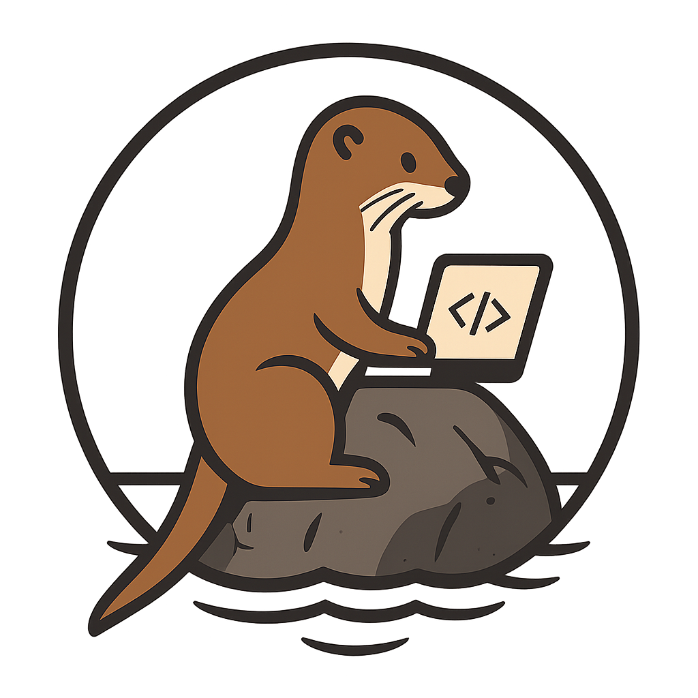

PIC is named after the Huastec word PIC which means otter.

A work in progress on writing a cool backend for Fortan applications focused on scientific computing software. Originally this was going to be for quantum chemistry but I ended up writing way more general routines than I expected.
I assume you have experience building things here. If you don’t please go further down for a more verbose explanation.
Briefly, for a minimal build (no BLAS, no MPI) you need:
test-drive dependencyI don’t have a Mac nor am I experienced with Windows development, however the CI routines test for the code to be built on both platforms. These instructions should work on either OS, but be mindful this is aimed at Linux.
The top level directory is $PIC_BASE which is the pic/ directory that was cloned or unpacked. I assume you are here. And
$PIC_ROOT is the path to where you’d like pic to be installed, for example export PIC_ROOT=$HOME/install/pic/dev/
mkdir build
cd build
cmake -DCMAKE_INSTALL_PREFIX=$PIC_ROOT ../
make -j install
To run the tests, from the build directory simply run: ctest
The same $PIC_BASE and $PIC_ROOT will be used here. Simply:
fpm install --prefix $PIC_ROOT --profile release
To run the tests: fpm test --profile release
There’s two build systems included in the present version, CMake and the Fortran Package Manager.
The dependencies of the project are, as of now, CMake (if using cmake), MPI, OpenMP, and a BLAS/LAPACK library.
The code itself is documented using FORD and the documentation is available here.
Comments in the code that are prefixed with !! are considered documentation comments and will be processed by FORD. Comments without that prefix are considered regular comments and will not be processed by FORD. So, please do not use !! for your comments unless you want them to be included in the documentation.
CMake offers a very modular build of PIC, the following options are available and can be triggered by -DPIC_ENABLE_XYZ=ON/OFF
| Option Name | Default | Description |
|---|---|---|
PIC_DEFAULT_INT8 |
OFF |
Use 8-byte integers as default |
PIC_ENABLE_MPI |
OFF |
Enable the use of MPI in PIC |
PIC_ENABLE_OMP |
OFF |
Enable the use of OpenMP in PIC |
PIC_ENABLE_BLAS |
OFF |
Enable BLAS/LAPACK libraries in PIC |
PIC_ENABLE_TESTING |
ON |
Enable testing for PIC |
PIC_ENABLE_JONQUIL |
OFF |
Enable Jonquil for JSON/TOML handling |
| Option Name | Default | Description |
|---|---|---|
PIC_USE_VAPAA |
OFF |
Use vapaa for binding to MPI |
Information on vapaa see here which is my personal fork which is pulled from here, and Jeff’s project.
Will update to use the orignal project at a later date.
To enable extended builds of PIC, i.e. using the BLAS interface and the dramatically underdeveloped MPI interface you can use the options provided above, simply:
cmake -DPIC_ENABLE_BLAS=ON -DPIC_ENABLE_MPI=ON ../
This will build the necessary files and will add the BLAS related tests to the ctest suite.
Install the FPM following the instructions and then simply: fpm install
The FPM will build the entire library, however the BLAS tests are not included in the default build. This is for simplicity for people
that want to include pic as a dependency in their fpm.toml files. To compile PIC with BLAS support, make sure to pass the compile flag:
fpm install --flag "-DPIC_HAVE_BLAS" so that the code gets compiled correctly.
Please see the contributing guidelines for information on how to contribute to the project.
See our code of conduct for details on community standards. In short, PIC is a welcoming codebase that is open to contributions from anyone at any level of experience. Do you want to fix my thousands of typos, go ahead. Do you want to contribute code, go ahead. Just always be respectful of others.
You can see some [WIP] examples in the pic-examples repository.
Simply add:
[dependencies]
pic = { git = "https://github.com/JorgeG94/pic.git", branch = "main"}
to your fpm.toml file and you’ll be able to checkout and use pic.
For CMake it is a bit more complex, since you’ll need to pull the dependency. You can see this template repo, which serves as an example on pulling and using the code inside your build system.
pic is compiled with “CMake symbols”, i.e. it will be findable by a CMake package provided you do the right things. Using
find_package(pic REQUIRED) will use CMake intrinsics to try to find the necessary things to link to pic. pic comes with the
target pic::pic that you can use for your target_link_libraries(${my_target} PRIVATE pic::pic). This will import
all includes, modules, libs, etc.
How CMake finds pic::pic depends on the policy CMP0074, this controls if the variables pic_DIR or pic_ROOT are used
to search for the package. If you have set the policy: cmake_policy(SET CMP0074 NEW), then pic_ROOT will also be used,
otherwise it is IGNORED. By setting export pic_ROOT=/path/to/where/pic/is/installed it will let CMake find the
necessary files it needs to just link pic. Be careful that, as of now, pic needs to be in small letter. All caps will fail to
find.